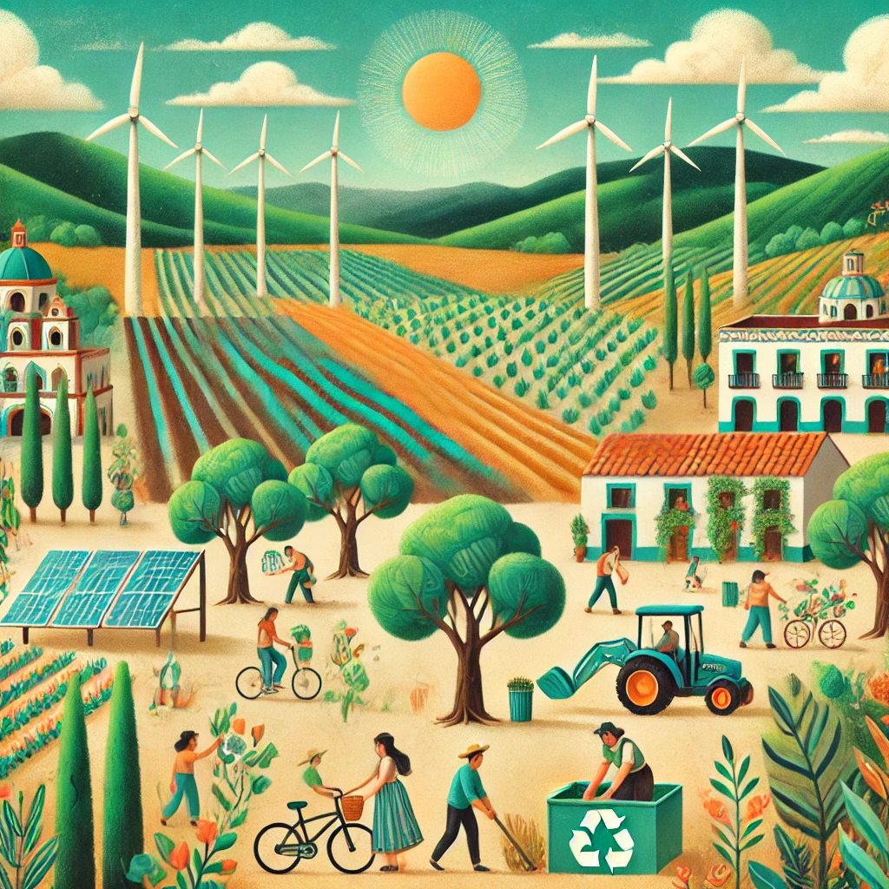
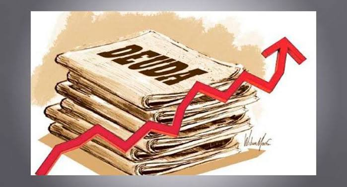

1. La caída del modelo económico estabilizador
El modelo económico de desarrollo estabilizador, implementado en México de 1958 a 1970, buscaba estabilidad económica, crecimiento sostenido y mejora de la calidad de vida a través de la inversión pública y regulación económica. Sin embargo, el modelo fracasó por desigualdad, dependencia del Estado, corrupción, falta de inversión en educación y factores externos como la crisis del petróleo de 1973 y la globalización.
Las consecuencias incluyeron alta inflación, desempleo, pobreza y desconfianza pública en el gobierno, lo que llevó a la búsqueda de un nuevo modelo.
2. Un nuevo modelo económico, el modelo de desarrollo compartido
El modelo económico de Desarrollo Compartido en México surgió durante el gobierno de Luis Echeverría (1970-1976), que consistía en la conjunción de un elevado incremento económico con el reparto equitativo del ingreso. Pretendía arreglar las deficiencias del modelo de desarrollo económico anterior, impulsado por el mandatario Adolfo Ruiz Cotines en 1954 y mantenido por Adolfo López Mateos y Gustavo Díaz Ordaz hasta 1970. Ciertos de las metas del modelo de desarrollo compartido eran incrementar el gasto público, minimizar la deuda externa, incrementar la actividad provechosa, modernizar la industria o incrementar las exportaciones, y se extendió parcialmente en el mandato de José López Portillo (1976-1982). El objetivo principal era que el crecimiento económico fuera “compartido” entre todos, no solo entre unos pocos. Para lograrlo, el gobierno decidió intervenir más en la economía: gastó en obras públicas, apoyó a empresas nacionales y creó programas para ayudar a los sectores más necesitados.
¿Cómo y cuándo? Este modelo se implementó a partir de 1970 y su esencia era un mayor rol del Estado en la economía, con políticas de gasto público ambiciosas para apoyar la industrialización, los servicios públicos y la infraestructura. También se promovió el crédito para estimular sectores clave y generar empleo. Echeverría buscó reducir la dependencia del capital extranjero e incrementar la autonomía económica de México.
¿Por qué surge? En los años previos, el modelo de Desarrollo Estabilizador había dado resultados en términos de crecimiento, pero con una distribución desigual de la riqueza y una creciente deuda externa. Las protestas sociales y la exigencia de cambios obligaron al gobierno a modificar su enfoque y poner énfasis en el desarrollo social. El Desarrollo Compartido intentó combinar el crecimiento económico con la justicia social. Al final para 1976 estalla la crisis, con la devaluación, una inflación de casi 16%, un déficit en la báscula de pagos, los altos gastos públicos, y el endeudamiento externo llevaron a una crisis que estalló hacia el final del gobierno de López Portillo en 1982. El modelo de desarrollo compartido no consiguió todos los metas trazados. No obstante, es viable resaltar que hay ciertos hechos positivos que han tenido su efecto en la sociedad mexicana.
3. Características del nuevo modelo
-
1. Fomento del ahorro interno
- Objetivo: Reducir la dependencia de la inversión extranjera y aumentar la inversión interna.
- Medidas: Implementación de políticas fiscales y monetarias para incentivar el ahorro interno.
-
2. Aumento de los impuestos
- Objetivo: Recaudar más recursos para financiar proyectos de desarrollo social y económico.
- Medidas: Aumento de impuestos directos e indirectos, como el Impuesto sobre la Renta y el Impuesto al Valor Agregado.
-
3. Creación de empresas paraestatales
- Objetivo: Fortalecer la economía nacional y reducir la dependencia de la inversión extranjera.
- Medidas: Creación de empresas estatales en sectores estratégicos como la energía, la minería y la industria manufacturera.
-
4. Mayor endeudamiento
- Objetivo: Financiar proyectos de desarrollo y cubrir déficits presupuestarios.
- Medidas: Emisión de deuda pública y obtención de préstamos internacionales.
-
5. Política social
- Objetivo: Reducir la pobreza y la desigualdad.
- Medidas: Implementación de programas sociales como la creación de empleo, educación y salud.
-
6. Control de precios
- Objetivo: Controlar la inflación y proteger el poder adquisitivo de la población.
- Medidas: Establecimiento de controles de precios y subsidios a productos básicos.
-
7. Proteccionismo comercial
- Objetivo: Proteger la industria nacional y reducir la dependencia de importaciones.
- Medidas: Implementación de aranceles y restricciones comerciales.
VIDEO DEL MODELO DE DESARROLLO COMPARATIVO

4. Beneficios y oportunidades para México